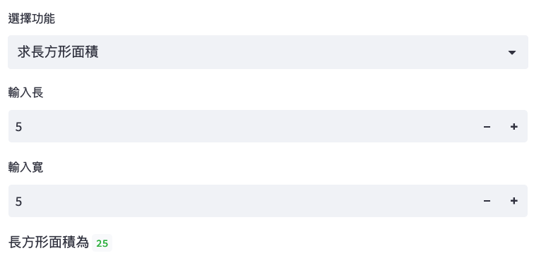

Streamlit
TNFSH Python教材
Table of Contents

1. Streamlit 簡介
一個開放原始碼工具，使用 Python 使用者能輕鬆地建立互動式網頁應用程式。其特色為：
- 簡單易用
- 即時更新
1.1. 模組安裝
1.1.1. 安裝
- 於 PyCharm 開啟一新 Project
- 打開 PyCharm 終端機
輸入下列命令
1: pip3 install streamlit
1.2. 使用方式
- 打開 PyCharm Project 中的 main.py
輸入以下 Python 程式
1: import streamlit as st 2: 3: userName = st.text_input('君の名は') 4: st.write('Ohayō', userName)
切換至終端機，輸入下列命令
1: streamlit run main.py
1.3. 結束程式
於終端機模式按 Ctrl+C
2. 輸出
Streamlit 提供了多種方便的輸出功能，讓開發者能快速呈現數據、文字、圖片等，增強網頁互動性。
2.1. 文字
Streamlit 支援 st.write()、st.text() 來輸出各種文字內容：
1: import streamlit as st 2: 3: # 使用 st.write() 輸出文字 4: st.write("Hello, Streamlit!") 5: st.text("這是基本的文字顯示")
2.2. 格式化文字輸出
可以使用 st.write() 來進行格式化的文字輸出。
1: import streamlit as st 2: 3: name = "TNFSH" 4: score = 95 5: st.write(f"{name} 的期末成績為：{score}")
2.3. 標題
Streamlit 提供了 st.header() 和 st.subheader() 來顯示標題，並可以設定不同層次的標題以區分內容。
1: import streamlit as st 2: 3: # 顯示標題 4: st.header("這是一個標題") 5: st.subheader("這是一個子標題")
2.4. 圖片
st.image() 可用來展示圖片。支援本地圖片和網址圖片，常用參數：
st.image(image, caption=None, width=None, use_container_width=False)image：可以是 URL 字串、檔案路徑、或 numpy arrayuse_container_width=True：圖片自動填滿容器寬度- 版本異動說明：舊參數
use_column_width自 Streamlit 1.30 起改名為use_container_width，舊寫法在新版會出現棄用警告；更新版本的 Streamlit 也可改用width'stretch'= 的寫法達到相同效果
1: import streamlit as st 2: 3: st.image("https://example.com/your-image.png", caption="這是一張圖片", use_container_width=True)
2.5. 表格
Streamlit 提供 st.table() 與 st.dataframe() 來顯示資料表，st.dataframe() 支援互動功能。
1: import streamlit as st 2: import pandas as pd 3: 4: # 建立一個簡單的資料框 5: data = { 6: "學生": ["Alice", "Bob", "Cathy"], 7: "分數": [95, 88, 76] 8: } 9: df = pd.DataFrame(data) 10: 11: # 顯示表格 12: st.table(df) 13: st.dataframe(df)
2.6. 狀態訊息
Streamlit 提供四種帶顏色的狀態訊息框，適合用來顯示操作結果：
st.success(body)── 綠色成功訊息st.warning(body)── 黃色警告訊息st.error(body)── 紅色錯誤訊息st.info(body)── 藍色資訊訊息
1: import streamlit as st 2: 3: st.success("操作成功！") 4: st.warning("注意：數值超出範圍") 5: st.error("錯誤：請重新輸入") 6: st.info("提示：可以用方向鍵調整數字")
3. 輸入
3.1. 文字
3.1.1. 短字串
st.text_input() 用來接收使用者輸入的短字串，常用參數：
st.text_input(label, value'', max_chars=None, type='default', placeholder=None)=type'password'= ：輸入內容顯示為圓點（見下方密碼範例）placeholder：輸入框內的灰色提示文字
1: import streamlit as st 2: 3: user_input = st.text_input("輸入你的名字") 4: st.write(user_input, '請認真上課')
3.1.2. 長文
1: import streamlit as st 2: 3: user_text = st.text_area("輸入今天上課的心得500字") 4: st.write("看完後幫QQ：", user_text)
3.1.3. 密碼
1: import streamlit as st 2: 3: password = st.text_input("請輸入密碼", type="password") 4: st.write("你的密碼：", password)
3.2. 時間日期
日期和時間各有專屬的輸入元件，常用參數：
st.date_input(label, value=None, min_value=None, max_value=None)st.time_input(label, value=None, step=timedelta(minutes=15))- 回傳值分別為
datetime.date和datetime.time物件
1: import streamlit as st 2: 3: date = st.date_input("請選擇日期") 4: time = st.time_input("選擇時間") 5: 6: st.write("你選擇的日期/時間為：", date, time)
3.3. 數字
st.number_input() 用來接收數字，常用參數：
st.number_input(label, min_value=None, max_value=None, value=None, step=None)value：預設值，未指定時預設為min_value（若也沒設min_value則為 0.0）step：每次按 +/- 的增減幅度，未指定時整數預設 1、浮點數預設 0.01value的型別決定回傳型別，給 int 就回傳 int，給 float 就回傳 float
1: import streamlit as st 2: 3: a = st.number_input("輸入A", min_value=0, max_value=100) 4: b = st.number_input("輸入B", min_value=0, max_value=100) 5: st.write("A+B：", a+b)
3.4. 選項
3.4.1. radio
st.radio() 以圓形選鈕呈現選項，常用參數：
st.radio(label, options, index=0, horizontal=False)horizontal=True：選項水平排列（預設是垂直）
1: import streamlit as st 2: 3: grade = st.radio("年級",["一","二","三"]) 4: st.write("你的年級是：", grade)
3.4.2. checkbox
st.checkbox() 以核取方塊呈現選項，常用參數：
st.checkbox(label, value=False)── 回傳 True/False- 注意：
st.button()在下次互動時會自動重置為 False，checkbox 則會保持勾選狀態 - 多個 checkbox 可以同時勾選，因此判斷時要用獨立的
if分別檢查，不要用elif（否則第二個勾選項會被跳過）
1: import streamlit as st 2: 3: check1 = st.checkbox("選擇A") 4: check2 = st.checkbox("選擇B") 5: 6: if check1: 7: st.write('你選了A') 8: if check2: 9: st.write('你選了B')
3.4.3. toggle
st.toggle() 的功能與 checkbox 相同（回傳 True/False），但外觀是滑動開關，適合「開啟／關閉」類的設定：
st.toggle(label, value=False)
1: import streamlit as st 2: 3: on = st.toggle("開啟通知") 4: st.write("通知狀態:", "已開啟" if on else "已關閉")
3.4.4. selectbox
selectbox 是單選下拉選單， multiselect 則可以複選，常用參數：
st.selectbox(label, options, index=0)──index是預設選取的索引位置st.multiselect(label, options, default=None)options：選項 list
單選
1: import streamlit as st 2: 3: subject = st.selectbox("選擇科目", ["數學", "科學", "歷史"]) 4: st.write("你選擇的科目是：", subject)
複選
1: import streamlit as st 2: 3: subjects = st.multiselect("選擇多個科目", ["數學", "科學", "歷史", "體育"]) 4: st.write("你選擇的科目有：", ", ".join(subjects))
3.5. [課堂練習]BMI 計算器 TNFSH
用 Streamlit 製作一個 BMI 計算器網頁，需包含以下元件：
st.text_input()輸入姓名st.number_input()輸入身高(cm)和體重(kg)st.radio()選擇性別（男/女）- 點擊
st.button()後計算並顯示：
- BMI 數值（取到小數第 1 位）
- BMI 分類（過輕 < 18.5、正常 18.5~24、過重 24~27、肥胖 > 27）
- BMI 數值（取到小數第 1 位）
- 使用
st.success()/st.warning()/st.error()顯示不同顏色的分類結果
公式：BMI = 體重(kg) ÷ 身高(m)²
3.6. [課堂練習]面積計算器 TNFSH
以 streamlit 撰寫一個 web-based 程式，該程式提供以下功能：
- 可選擇求圓面積或長方形面積
- 若使用者點選圓面積，則輸入半徑、輸出面積
- 若使用者點選長方形面積，則輸入長、寬、輸出面積

Figure 1: Streamlit課堂作業